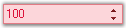

The NumericUpDownExt control enables XP Themes look and feel for the UpDown controls that are missing in the corresponding .NET control.

Figure 546: NumericUpDownExt Control
More:
Features
Creating NumericUpDownExt
Concepts and Features
NumericUpDownExt Events
 Features
Features